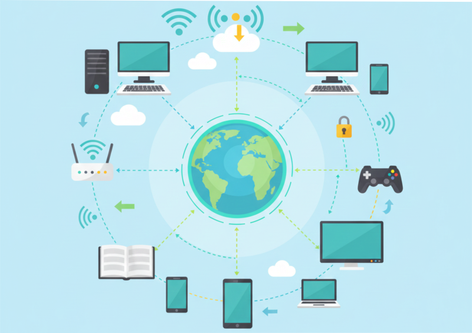
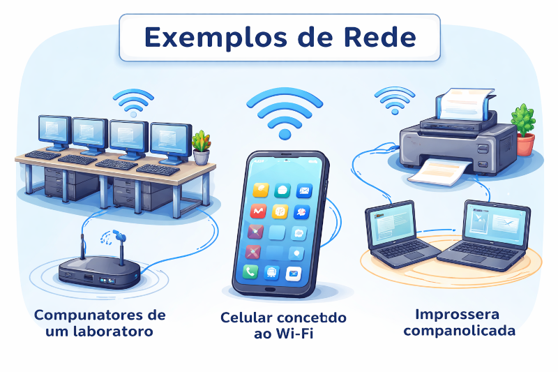
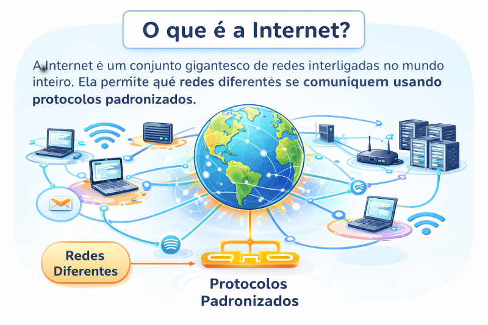
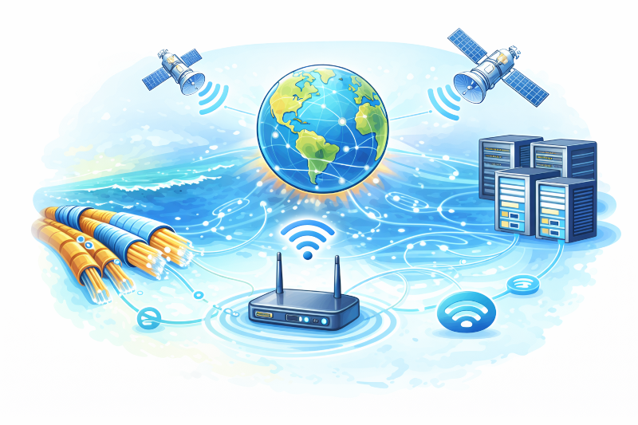
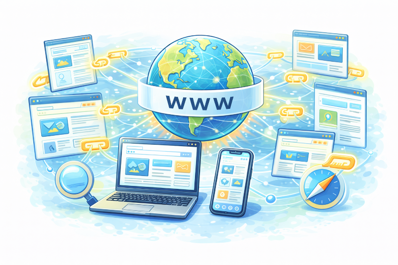
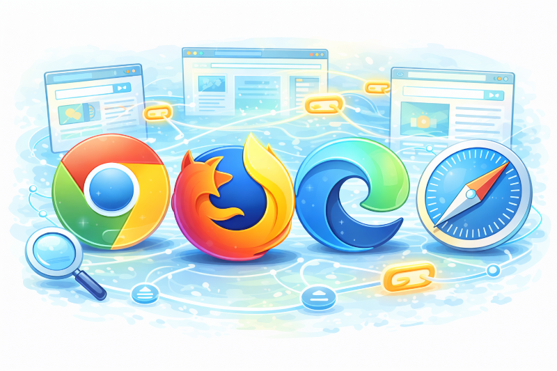
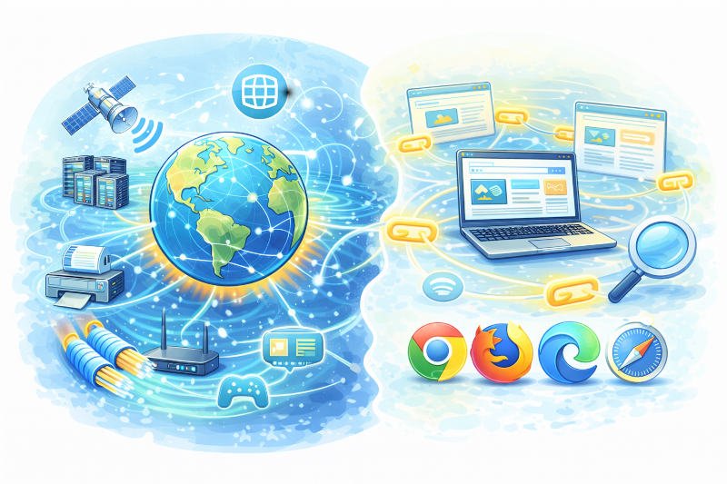
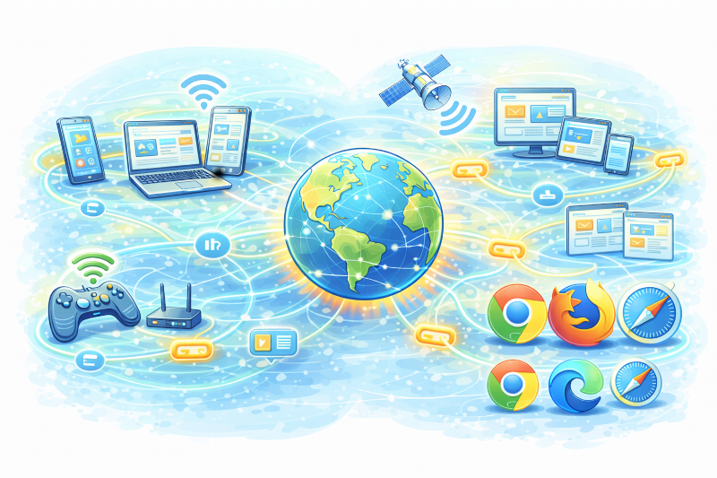

O que é uma Rede?
Uma rede de computadores é o conjunto de dois
ou mais dispositivos interligados para compartilhar dados,
recursos e serviços.

Exemplos de Rede
✔ Computadores de um laboratório
✔ Celular conectado ao Wi-Fi
✔ Impressora compartilhada
Tudo isso é rede.

O que é a Internet?
A Internet é um conjunto gigantesco de redes
interligadas no mundo inteiro.
Ela permite que redes diferentes se comuniquem usando
protocolos padronizados.

Internet é Infraestrutura
A Internet não é um site ou aplicativo.
Ela é formada por:
🌐 Cabos
🌐 Roteadores
🌐 Servidores
🌐 Satélites

O que é a Web?
A World Wide Web (WWW) é um serviço que funciona
sobre a Internet.
Sites, páginas HTML, links e navegadores fazem parte da Web.

Navegadores
Navegadores são programas que acessam a Web:
🌍 Google Chrome
🌍 Firefox
🌍 Edge
🌍 Safari

Internet x Web
🌐 Internet: estrutura e rede mundial
🧠 Web: serviço de páginas e sites
Nem tudo na Internet é Web (e-mails, jogos online, FTP).

Serviços da Internet
✔ E-mail
✔ Sites (Web)
✔ Streaming
✔ Jogos online
✔ Mensagens instantâneas

Conclusão da Aula
✔ Rede conecta dispositivos
✔ Internet conecta redes
✔ Web é um serviço da Internet
✔ Nem tudo que usa Internet é site